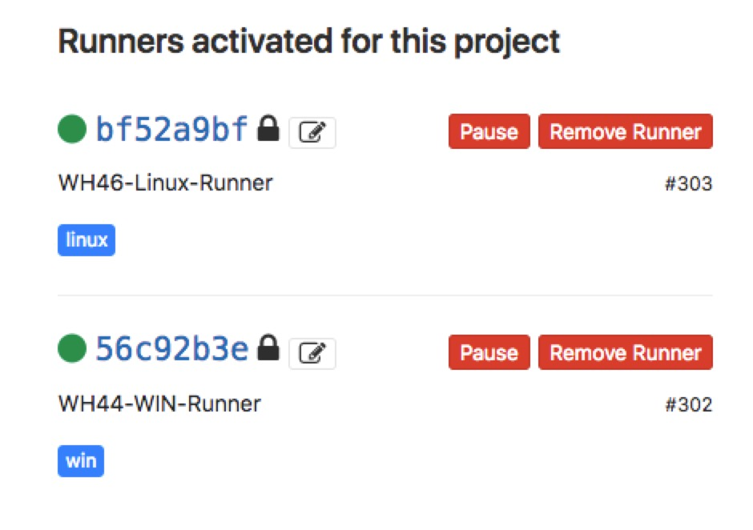

<!DOCTYPE html>


  


<html class="theme-next muse use-motion" lang="zh-CN">
<head>
  <meta charset="UTF-8"/>
<meta http-equiv="X-UA-Compatible" content="IE=edge" />
<meta name="viewport" content="width=device-width, initial-scale=1, maximum-scale=2"/>
<meta name="theme-color" content="#222">


<meta http-equiv="Cache-Control" content="no-transform" />
<meta http-equiv="Cache-Control" content="no-siteapp" />


<link href="/lib/font-awesome/css/font-awesome.min.css?v=4.6.2" rel="stylesheet" type="text/css" />

<link href="/css/main.css?v=6.4.1" rel="stylesheet" type="text/css" />


  <link rel="apple-touch-icon" sizes="180x180" href="/images/favicon.ico?v=6.4.1">


  <link rel="icon" type="image/png" sizes="32x32" href="/images/favicon.ico?v=6.4.1">


  <link rel="icon" type="image/png" sizes="16x16" href="/images/favicon.ico?v=6.4.1">


  <link rel="mask-icon" href="/images/favicon.ico?v=6.4.1" color="#222">


<script type="text/javascript" id="hexo.configurations">
  var NexT = window.NexT || {};
  var CONFIG = {
    root: '/',
    scheme: 'Muse',
    version: '6.4.1',
    sidebar: {"position":"left","display":"post","offset":12,"b2t":false,"scrollpercent":true,"onmobile":false},
    fancybox: false,
    fastclick: false,
    lazyload: false,
    tabs: true,
    motion: {"enable":true,"async":false,"transition":{"post_block":"fadeIn","post_header":"slideDownIn","post_body":"slideDownIn","coll_header":"slideLeftIn","sidebar":"slideUpIn"}},
    algolia: {
      applicationID: '',
      apiKey: '',
      indexName: '',
      hits: {"per_page":10},
      labels: {"input_placeholder":"Search for Posts","hits_empty":"We didn't find any results for the search: ${query}","hits_stats":"${hits} results found in ${time} ms"}
    }
  };
</script>


  


  <meta name="description" content="为何使用 CI/CD 写了一个跨平台桌面应用项目，其使用 Elecron 作为框架，需要在不同的桌面端（mac，win，linux）进行测试+打包工作，手动方式很繁琐，我们希望有一套 CI/CD 能够完成  自动化测试打包及部署。   如果使用的是 Gitlab 作为版本控制工具，对应的使用Gitlab CI作为解决方案。 如果使用 Github 作为版本控制工具，则可以使用Travis CI(">
<meta name="keywords" content="GitLab,CI&#x2F;CD">
<meta property="og:type" content="article">
<meta property="og:title" content="Use Gitlab CI">
<meta property="og:url" content="https://morningchen.com/2018/10/16/use-gitlab-ci/index.html">
<meta property="og:site_name" content="xixijun&#39;s blog">
<meta property="og:description" content="为何使用 CI/CD 写了一个跨平台桌面应用项目，其使用 Elecron 作为框架，需要在不同的桌面端（mac，win，linux）进行测试+打包工作，手动方式很繁琐，我们希望有一套 CI/CD 能够完成  自动化测试打包及部署。   如果使用的是 Gitlab 作为版本控制工具，对应的使用Gitlab CI作为解决方案。 如果使用 Github 作为版本控制工具，则可以使用Travis CI(">
<meta property="og:locale" content="zh-CN">
<meta property="og:image" content="https://morningchen.com/2018/10/16/use-gitlab-ci/gitlab-runner.jpeg">
<meta property="og:updated_time" content="2018-11-30T09:24:31.000Z">
<meta name="twitter:card" content="summary">
<meta name="twitter:title" content="Use Gitlab CI">
<meta name="twitter:description" content="为何使用 CI/CD 写了一个跨平台桌面应用项目，其使用 Elecron 作为框架，需要在不同的桌面端（mac，win，linux）进行测试+打包工作，手动方式很繁琐，我们希望有一套 CI/CD 能够完成  自动化测试打包及部署。   如果使用的是 Gitlab 作为版本控制工具，对应的使用Gitlab CI作为解决方案。 如果使用 Github 作为版本控制工具，则可以使用Travis CI(">
<meta name="twitter:image" content="https://morningchen.com/2018/10/16/use-gitlab-ci/gitlab-runner.jpeg">


  <link rel="alternate" href="/atom.xml" title="xixijun's blog" type="application/atom+xml" />


  <link rel="canonical" href="https://morningchen.com/2018/10/16/use-gitlab-ci/"/>


<script type="text/javascript" id="page.configurations">
  CONFIG.page = {
    sidebar: "",
  };
</script>

  <title>Use Gitlab CI | xixijun's blog</title>
  


<script async src="https://www.googletagmanager.com/gtag/js?id=UA-67508730-1"></script>
<script>
  window.dataLayer = window.dataLayer || [];
  function gtag(){dataLayer.push(arguments);}
  gtag('js', new Date());

  gtag('config', 'UA-67508730-1');
</script>


  <script type="text/javascript">
    var _hmt = _hmt || [];
    (function() {
      var hm = document.createElement("script");
      hm.src = "https://hm.baidu.com/hm.js?5e3bddc5c3dafc5836408f4b8507b101";
      var s = document.getElementsByTagName("script")[0];
      s.parentNode.insertBefore(hm, s);
    })();
  </script>


  <noscript>
  <style type="text/css">
    .use-motion .motion-element,
    .use-motion .brand,
    .use-motion .menu-item,
    .sidebar-inner,
    .use-motion .post-block,
    .use-motion .pagination,
    .use-motion .comments,
    .use-motion .post-header,
    .use-motion .post-body,
    .use-motion .collection-title { opacity: initial; }

    .use-motion .logo,
    .use-motion .site-title,
    .use-motion .site-subtitle {
      opacity: initial;
      top: initial;
    }

    .use-motion {
      .logo-line-before i { left: initial; }
      .logo-line-after i { right: initial; }
    }
  </style>
</noscript>

</head>

<body itemscope itemtype="http://schema.org/WebPage" lang="zh-CN">

  
  
    
  

  <div class="container sidebar-position-left page-post-detail">
    <div class="headband"></div>

    <header id="header" class="header" itemscope itemtype="http://schema.org/WPHeader">
      <div class="header-inner"><div class="site-brand-wrapper">
  <div class="site-meta ">
    

    <div class="custom-logo-site-title">
      <a href="/" class="brand" rel="start">
        <span class="logo-line-before"><i></i></span>
        <span class="site-title">xixijun's blog</span>
        <span class="logo-line-after"><i></i></span>
      </a>
    </div>
    
  </div>

  <div class="site-nav-toggle">
    <button aria-label="切换导航栏">
      <span class="btn-bar"></span>
      <span class="btn-bar"></span>
      <span class="btn-bar"></span>
    </button>
  </div>
</div>


<nav class="site-nav">
  
    <ul id="menu" class="menu">
      
        
        
        
          
          <li class="menu-item menu-item-home">
    <a href="/" rel="section">
      <i class="menu-item-icon fa fa-fw fa-home"></i> <br />首页</a>
  </li>
        
        
        
          
          <li class="menu-item menu-item-archives">
    <a href="/archives/" rel="section">
      <i class="menu-item-icon fa fa-fw fa-archive"></i> <br />归档<span class="badge">32</span></a>
  </li>
        
        
        
          
          <li class="menu-item menu-item-tags">
    <a href="/tags/" rel="section">
      <i class="menu-item-icon fa fa-fw fa-tags"></i> <br />标签<span class="badge">46</span></a>
  </li>
        
        
        
          
          <li class="menu-item menu-item-categories">
    <a href="/categories/" rel="section">
      <i class="menu-item-icon fa fa-fw fa-th"></i> <br />分类<span class="badge">20</span></a>
  </li>
        
        
        
          
          <li class="menu-item menu-item-about">
    <a href="/about/" rel="section">
      <i class="menu-item-icon fa fa-fw fa-user"></i> <br />关于</a>
  </li>

      
      
    </ul>
  

  
    

  

  
</nav>


  


</div>
    </header>

    


    <main id="main" class="main">
      <div class="main-inner">
        <div class="content-wrap">
          
          <div id="content" class="content">
            

  <div id="posts" class="posts-expand">
    

  

  
  
  

  

  <article class="post post-type-normal" itemscope itemtype="http://schema.org/Article">
  
  
  
  <div class="post-block">
    <link itemprop="mainEntityOfPage" href="https://morningchen.com/2018/10/16/use-gitlab-ci/">

    <span hidden itemprop="author" itemscope itemtype="http://schema.org/Person">
      <meta itemprop="name" content="xixijun">
      <meta itemprop="description" content="Insist in what you love.">
      <meta itemprop="image" content="/images/avatar.jpeg">
    </span>

    <span hidden itemprop="publisher" itemscope itemtype="http://schema.org/Organization">
      <meta itemprop="name" content="xixijun's blog">
    </span>

    
      <header class="post-header">

        
        
          <h1 class="post-title" itemprop="name headline">Use Gitlab CI
              
            
          </h1>
        

        <div class="post-meta">
          <span class="post-time">

            
            
            

            
              <span class="post-meta-item-icon">
                <i class="fa fa-calendar-o"></i>
              </span>
              
                <span class="post-meta-item-text">发表于</span>
              

              
                
              

              <time title="创建时间：2018-10-16 14:31:22" itemprop="dateCreated datePublished" datetime="2018-10-16T14:31:22+08:00">2018-10-16</time>
            

            
          </span>

          
            <span class="post-category" >
            
              <span class="post-meta-divider">|</span>
            
              <span class="post-meta-item-icon">
                <i class="fa fa-folder-o"></i>
              </span>
              
                <span class="post-meta-item-text">分类于</span>
              
              
                <span itemprop="about" itemscope itemtype="http://schema.org/Thing"><a href="/categories/DevOps/" itemprop="url" rel="index"><span itemprop="name">DevOps</span></a></span>

                
                
              
            </span>
          

          
            
              <span class="post-comments-count">
                <span class="post-meta-divider">|</span>
                <span class="post-meta-item-icon">
                  <i class="fa fa-comment-o"></i>
                </span>
                <a href="/2018/10/16/use-gitlab-ci/#comments" itemprop="discussionUrl">
                
                  <span class="post-comments-count disqus-comment-count"
                        data-disqus-identifier="2018/10/16/use-gitlab-ci/" itemprop="commentCount"></span>
                </a>
              </span>
            
          

          
          
             <span id="/2018/10/16/use-gitlab-ci/" class="leancloud_visitors" data-flag-title="Use Gitlab CI">
               <span class="post-meta-divider">|</span>
               <span class="post-meta-item-icon">
                 <i class="fa fa-eye"></i>
               </span>
               
                 <span class="post-meta-item-text">阅读次数：</span>
               
                 <span class="leancloud-visitors-count"></span>
             </span>
          

          

          
            <div class="post-symbolscount">
              

              
                <span class="post-meta-item-icon">
                  <i class="fa fa-file-word-o"></i>
                </span>
                
                  <span class="post-meta-item-text">本文字数：</span>
                
                <span title="本文字数">3.8k</span>
              

              
                <span class="post-meta-divider">|</span>
              

              
                <span class="post-meta-item-icon">
                  <i class="fa fa-clock-o"></i>
                </span>
                
                  <span class="post-meta-item-text">阅读时长 &asymp;</span>
                
                <span title="阅读时长">3 分钟</span>
              
            </div>
          

          

        </div>
      </header>
    

    
    
    
    <div class="post-body" itemprop="articleBody">

      
      

      
        <h2 id="为何使用-CI-CD"><a href="#为何使用-CI-CD" class="headerlink" title="为何使用 CI/CD"></a>为何使用 CI/CD</h2><blockquote>
<p>写了一个跨平台桌面应用项目，其使用 Elecron 作为框架，需要在不同的桌面端（mac，win，linux）进行测试+打包工作，手动方式很繁琐，我们希望有一套 CI/CD 能够完成  自动化测试打包及部署。</p>
</blockquote>
<ul>
<li>如果使用的是 Gitlab 作为版本控制工具，对应的使用<code>Gitlab CI</code>作为解决方案。</li>
<li>如果使用 Github 作为版本控制工具，则可以使用<code>Travis CI</code>(支持 Linux + OSX 平台，Windows 支持也将会马上发布)和<code>AppVeyor</code>(支持 Windows + Linux 平台)</li>
</ul>
<p>我们这边以<code>Gitlab CI</code>为例。</p>
<a id="more"></a>
<h2 id="1-配置-Gitlab-Runner"><a href="#1-配置-Gitlab-Runner" class="headerlink" title="1. 配置 Gitlab Runner"></a>1. 配置 <code>Gitlab Runner</code></h2><p><code>Gitlab Runner</code>是<code>.gitlab-ci.yml</code>脚本的运行器，<code>Gitlab Runner</code>是基于 Gitlab-CI 的 API 进行构建的相互隔离的机器（或虚拟机）。<code>GitLab Runner</code> 不需要和 Gitlab 安装在同一台机器上，但是考虑到 GitLab Runner 的资源消耗问题和安全问题，也不建议这两者安装在同一台机器上。</p>
<p><code>Gitlab Runner</code>分为两种，<code>Shared runners</code>和<code>Specific runners</code>。<br><code>Specific runners</code>只能被指定的项目使用，<code>Shared runners</code>则可以运行所有开启 <code>Allow shared runners</code>选项的项目。</p>
<p>关于如何安装<code>Gitlab Runner</code>，这里就不细说了，<a href="https://docs.gitlab.com/runner/install/" target="_blank" rel="noopener">官方文档</a> 肯定是最佳选择。</p>
<p>这里我们配置了 2 台<code>Specific Runner</code>，一台 Windows 平台下，一台 Linux 平台下，如图所示</p>
<p></p>
<p>顺便说说配置时踩到的坑：</p>
<blockquote>
<p>在配置玩 Runner 后，gitlab ui 一直显示这个 Runner 的警告，不是绿色的 而是感叹号 ⚠️</p>
</blockquote>
<p><strong>后来发现在执行完<code>gitlab-runner start</code>后，还要执行<code>gitlab-runner run</code>才算是真正的跑起来。。。</strong></p>
<p>我们可以查看一下<code>Linux Runner</code>的配置：</p>
<figure class="highlight bash"><table><tr><td class="gutter"><pre><span class="line">1</span><br><span class="line">2</span><br><span class="line">3</span><br><span class="line">4</span><br><span class="line">5</span><br><span class="line">6</span><br><span class="line">7</span><br><span class="line">8</span><br><span class="line">9</span><br><span class="line">10</span><br><span class="line">11</span><br><span class="line">12</span><br><span class="line">13</span><br><span class="line">14</span><br><span class="line">15</span><br><span class="line">16</span><br><span class="line">17</span><br><span class="line">18</span><br><span class="line">19</span><br><span class="line">20</span><br><span class="line">21</span><br><span class="line">22</span><br><span class="line">23</span><br><span class="line">24</span><br></pre></td><td class="code"><pre><span class="line">sudo vi /etc/gitlab-runner/config.toml</span><br><span class="line"></span><br><span class="line">concurrent = 1</span><br><span class="line">check_interval = 0</span><br><span class="line"></span><br><span class="line">[session_server]</span><br><span class="line">  session_timeout = 1800</span><br><span class="line"></span><br><span class="line">[[runners]]</span><br><span class="line">  name = <span class="string">"WH46-Linux-Runner"</span></span><br><span class="line">  url = <span class="string">"https://xxxxxxxx.com/"</span></span><br><span class="line">  token = <span class="string">"xxxxxxxx"</span></span><br><span class="line">  executor = <span class="string">"docker"</span></span><br><span class="line">  [runners.docker]</span><br><span class="line">    tls_verify = <span class="literal">false</span></span><br><span class="line">    image = <span class="string">"python:3.6.6-slim"</span></span><br><span class="line">    privileged = <span class="literal">false</span></span><br><span class="line">    disable_cache = <span class="literal">false</span></span><br><span class="line">    volumes = [<span class="string">"/root/build_cache:/cache:rw"</span>]</span><br><span class="line">    shm_size = 0</span><br><span class="line">    pull_policy = <span class="string">"if-not-present"</span></span><br><span class="line">  [runners.cache]</span><br><span class="line">    [runners.cache.s3]</span><br><span class="line">    [runners.cache.gcs]</span><br></pre></td></tr></table></figure>
<ul>
<li>这里我们选择<code>docker</code>作为 <code>Runner</code>的<code>executor</code>，当然也可以选择<code>shell</code>。</li>
<li>如果想在 docker 的宿主机上保存 cache，可以配置<code>volumes = [&quot;/root/build_cache:/cache:rw&quot;]</code>，将宿主机的<code>/root/build_cache</code>目录映射到 docker 的<code>/cache</code>目录，并且可读可写。</li>
<li>这里拉取 docker 镜像的策略是<code>pull_policy = &quot;if-not-present&quot;</code>，当本地镜像不存在时，才拉取远程的镜像（默认配置是直接从远程拉取）</li>
</ul>
<p>下面是<code>Windows Runner</code>的配置</p>
<figure class="highlight bash"><table><tr><td class="gutter"><pre><span class="line">1</span><br><span class="line">2</span><br><span class="line">3</span><br><span class="line">4</span><br><span class="line">5</span><br><span class="line">6</span><br><span class="line">7</span><br><span class="line">8</span><br><span class="line">9</span><br><span class="line">10</span><br><span class="line">11</span><br><span class="line">12</span><br><span class="line">13</span><br><span class="line">14</span><br></pre></td><td class="code"><pre><span class="line">concurrent = 1</span><br><span class="line">check_interval = 0</span><br><span class="line"></span><br><span class="line">[session_server]</span><br><span class="line">  session_timeout = 1800</span><br><span class="line"></span><br><span class="line">[[runners]]</span><br><span class="line">  name = <span class="string">"WH44-WIN-Runner"</span></span><br><span class="line">  url = <span class="string">"https://xxxxxxx.com/"</span></span><br><span class="line">  token = <span class="string">"xxxxxxxx"</span></span><br><span class="line">  executor = <span class="string">"shell"</span></span><br><span class="line">  [runners.cache]</span><br><span class="line">    [runners.cache.s3]</span><br><span class="line">    [runners.cache.gcs]</span><br></pre></td></tr></table></figure>
<ul>
<li>这里我们选择<code>shell</code>作为 <code>Runner</code>的<code>executor</code>。（因为 docker 没有 windows 的镜像，而我们需要在 windows 环境下打包）</li>
</ul>
<h2 id="2-配置-gitlab-ci-yml"><a href="#2-配置-gitlab-ci-yml" class="headerlink" title="2. 配置 .gitlab-ci.yml"></a>2. 配置 <code>.gitlab-ci.yml</code></h2><p>只要在项目仓库的根目录添加<code>.gitlab-ci.yml</code>文件，并且配置了Runner（运行器），那么每一次合并请求（MR）或者push 或者打tag 都会触发CI pipeline。</p>
<p>以下是一个例子，更多的配置可以参考 <code>gitlab ci</code> 的官方文档<br><figure class="highlight"><table><tr><td class="gutter"><pre><span class="line">1</span><br><span class="line">2</span><br><span class="line">3</span><br><span class="line">4</span><br><span class="line">5</span><br><span class="line">6</span><br><span class="line">7</span><br><span class="line">8</span><br><span class="line">9</span><br><span class="line">10</span><br><span class="line">11</span><br><span class="line">12</span><br><span class="line">13</span><br><span class="line">14</span><br><span class="line">15</span><br><span class="line">16</span><br><span class="line">17</span><br><span class="line">18</span><br><span class="line">19</span><br><span class="line">20</span><br><span class="line">21</span><br><span class="line">22</span><br><span class="line">23</span><br><span class="line">24</span><br><span class="line">25</span><br><span class="line">26</span><br><span class="line">27</span><br><span class="line">28</span><br><span class="line">29</span><br><span class="line">30</span><br><span class="line">31</span><br><span class="line">32</span><br><span class="line">33</span><br><span class="line">34</span><br><span class="line">35</span><br><span class="line">36</span><br><span class="line">37</span><br><span class="line">38</span><br><span class="line">39</span><br><span class="line">40</span><br><span class="line">41</span><br><span class="line">42</span><br><span class="line">43</span><br><span class="line">44</span><br><span class="line">45</span><br><span class="line">46</span><br><span class="line">47</span><br><span class="line">48</span><br><span class="line">49</span><br><span class="line">50</span><br><span class="line">51</span><br><span class="line">52</span><br><span class="line">53</span><br><span class="line">54</span><br><span class="line">55</span><br><span class="line">56</span><br><span class="line">57</span><br><span class="line">58</span><br><span class="line">59</span><br></pre></td><td class="code"><pre><span class="line">image: python:3.6.6-custom</span><br><span class="line">stages:</span><br><span class="line">  - test</span><br><span class="line">  - report</span><br><span class="line">  - deploy</span><br><span class="line"></span><br><span class="line">variables:</span><br><span class="line">  PIP_CACHE_DIR: "$CI_PROJECT_DIR/pip-cache"</span><br><span class="line"></span><br><span class="line">cache:</span><br><span class="line">  key: "$CI_PROJECT_ID"</span><br><span class="line">  paths:</span><br><span class="line">  - $CI_PROJECT_DIR/pip-cache</span><br><span class="line">  - $CI_PROJECT_DIR/node_modules</span><br><span class="line"></span><br><span class="line">before_script:</span><br><span class="line"><span class="comment">#  - apt-get update &amp;&amp; apt-get install -y --no-install-recommends gcc python3-dev libssl-dev</span></span><br><span class="line"><span class="comment">#  - apt-get install --reinstall -y build-essential</span></span><br><span class="line">  - python --version</span><br><span class="line">  - pip install -r zipoc/requirements.txt -i https://mirrors.aliyun.com/pypi/simple</span><br><span class="line"></span><br><span class="line">test:</span><br><span class="line">  stage: test</span><br><span class="line">  tags:</span><br><span class="line">    - linux</span><br><span class="line">  script:</span><br><span class="line">    - pip list</span><br><span class="line"><span class="comment">#    - python -m unittest</span></span><br><span class="line"></span><br><span class="line">coverage:</span><br><span class="line">  stage: report</span><br><span class="line">  tags:</span><br><span class="line">    - linux</span><br><span class="line">  coverage: '/TOTAL\s+\d+\s+\d+\s+(\d+%)/'</span><br><span class="line">  script:</span><br><span class="line">    - pip install coverage</span><br><span class="line"><span class="comment">#    - coverage run -m unittest</span></span><br><span class="line">    - coverage report</span><br><span class="line"></span><br><span class="line">windows package:</span><br><span class="line">  stage: deploy</span><br><span class="line">  tags:</span><br><span class="line">    - win</span><br><span class="line">  before_script:</span><br><span class="line">    - pwd</span><br><span class="line">    - virtualenv.exe --python "C:\\Users\\app\\AppData\\Local\\Programs\\Python\\Python36\\python.exe" env</span><br><span class="line">    - call env\Scripts\activate</span><br><span class="line">    - call pip install -r zipoc/requirements.txt</span><br><span class="line">  script:</span><br><span class="line">    - pyinstaller</span><br><span class="line">    - npm run build:win32</span><br><span class="line">  artifacts:</span><br><span class="line">    paths:</span><br><span class="line">      - build/zipoc-win32-x64/</span><br><span class="line">    expire_in: 7d</span><br><span class="line">  only:</span><br><span class="line">    - tags</span><br><span class="line">  except:</span><br><span class="line">    - branches</span><br></pre></td></tr></table></figure></p>
<h2 id="问题-windows-runner-不运行"><a href="#问题-windows-runner-不运行" class="headerlink" title="问题: windows runner 不运行"></a>问题: windows runner 不运行</h2><p>运行完<code>before_script</code>后面的<code>script</code>就跳过不运行了，后来发现是<code>CMD</code>的坑。</p>
<p>在 windows 上使用 Runner 时，默认 shell 是<code>CMD</code>，有太多 80 年代的<code>MS-DOS</code>遗留问题需要踩，<br>解决办法是在命令前加上<code>call</code>，<br>或者使用<code>powershell</code>作为 Runner 的<code>shell</code></p>
<figure class="highlight plain"><table><tr><td class="gutter"><pre><span class="line">1</span><br><span class="line">2</span><br><span class="line">3</span><br><span class="line">4</span><br><span class="line">5</span><br><span class="line">6</span><br><span class="line">7</span><br><span class="line">8</span><br><span class="line">9</span><br><span class="line">10</span><br><span class="line">11</span><br><span class="line">12</span><br></pre></td><td class="code"><pre><span class="line">before_script:</span><br><span class="line">  - call npm install --silent</span><br><span class="line"></span><br><span class="line">stages:</span><br><span class="line">  - test</span><br><span class="line"></span><br><span class="line">lint:</span><br><span class="line">  stage: test</span><br><span class="line">  tags:</span><br><span class="line">    - javascript</span><br><span class="line">  script:</span><br><span class="line">    - call eslint */**</span><br></pre></td></tr></table></figure>

      
    </div>

    

    
    
    

    

    
      <div>
        <div style="padding: 10px 0; margin: 20px auto; width: 90%; text-align: center;">
  <div>如果我的文章对你有很大帮助 那么不妨？</div>
  <button id="rewardButton" disable="enable" onclick="var qr = document.getElementById('QR'); if (qr.style.display === 'none') {qr.style.display='block';} else {qr.style.display='none'}">
    <span>打赏</span>
  </button>
  <div id="QR" style="display: none;">

    
      <div id="wechat" style="display: inline-block">
        
        <p>微信支付</p>
      </div>
    

    
      <div id="alipay" style="display: inline-block">
        
        <p>支付宝</p>
      </div>
    

    

  </div>
</div>

      </div>
    

    
      <div>
        <ul class="post-copyright">
  <li class="post-copyright-author">
    <strong>本文作者： </strong>xixijun</li>
  <li class="post-copyright-link">
    <strong>本文链接：</strong>
    <a href="https://morningchen.com/2018/10/16/use-gitlab-ci/" title="Use Gitlab CI">https://morningchen.com/2018/10/16/use-gitlab-ci/</a>
  </li>
  <li class="post-copyright-license">
    <strong>版权声明： </strong>本博客所有文章除特别声明外，均采用 <a href="https://creativecommons.org/licenses/by-nc-sa/4.0/" rel="external nofollow" target="_blank">CC BY-NC-SA 4.0</a> 许可协议。转载请注明出处！</li>
</ul>

      </div>
    

    <footer class="post-footer">
      
        <div class="post-tags">
          
            <a href="/tags/GitLab/" rel="tag"># GitLab</a>
          
            <a href="/tags/CI-CD/" rel="tag"># CI/CD</a>
          
        </div>
      

      
      
      

      
        <div class="post-nav">
          <div class="post-nav-next post-nav-item">
            
              <a href="/2017/11/04/ceye-architechure/" rel="next" title="CEYE.IO">
                <i class="fa fa-chevron-left"></i> CEYE.IO
              </a>
            
          </div>

          <span class="post-nav-divider"></span>

          <div class="post-nav-prev post-nav-item">
            
              <a href="/2018/11/30/use-zeronet-with-tor/" rel="prev" title="Use ZeroNet With Tor">
                Use ZeroNet With Tor <i class="fa fa-chevron-right"></i>
              </a>
            
          </div>
        </div>
      

      
      
    </footer>
  </div>
  
  
  
  </article>


  </div>


          </div>
          

  
    <div class="comments" id="comments">
      <div id="disqus_thread">
        <noscript>
          Please enable JavaScript to view the
          <a href="https://disqus.com/?ref_noscript">comments powered by Disqus.</a>
        </noscript>
      </div>
    </div>

  


        </div>
        
          
  
  <div class="sidebar-toggle">
    <div class="sidebar-toggle-line-wrap">
      <span class="sidebar-toggle-line sidebar-toggle-line-first"></span>
      <span class="sidebar-toggle-line sidebar-toggle-line-middle"></span>
      <span class="sidebar-toggle-line sidebar-toggle-line-last"></span>
    </div>
  </div>

  <aside id="sidebar" class="sidebar">
    
    <div class="sidebar-inner">

      

      
        <ul class="sidebar-nav motion-element">
          <li class="sidebar-nav-toc sidebar-nav-active" data-target="post-toc-wrap">
            文章目录
          </li>
          <li class="sidebar-nav-overview" data-target="site-overview-wrap">
            站点概览
          </li>
        </ul>
      

      <section class="site-overview-wrap sidebar-panel">
        <div class="site-overview">
          <div class="site-author motion-element" itemprop="author" itemscope itemtype="http://schema.org/Person">
            
              
            
              <p class="site-author-name" itemprop="name">xixijun</p>
              <p class="site-description motion-element" itemprop="description">Insist in what you love.</p>
          </div>

          
            <nav class="site-state motion-element">
              
                <div class="site-state-item site-state-posts">
                
                  <a href="/archives/">
                
                    <span class="site-state-item-count">32</span>
                    <span class="site-state-item-name">日志</span>
                  </a>
                </div>
              

              
                
                
                <div class="site-state-item site-state-categories">
                  <a href="/categories/index.html">
                    
                    
                      
                    
                      
                    
                      
                    
                      
                    
                      
                    
                      
                    
                      
                    
                      
                    
                      
                    
                      
                    
                      
                    
                      
                    
                      
                    
                      
                    
                      
                    
                      
                    
                      
                    
                      
                    
                      
                    
                      
                    
                    <span class="site-state-item-count">20</span>
                    <span class="site-state-item-name">分类</span>
                  </a>
                </div>
              

              
                
                
                <div class="site-state-item site-state-tags">
                  <a href="/tags/index.html">
                    
                    
                      
                    
                      
                    
                      
                    
                      
                    
                      
                    
                      
                    
                      
                    
                      
                    
                      
                    
                      
                    
                      
                    
                      
                    
                      
                    
                      
                    
                      
                    
                      
                    
                      
                    
                      
                    
                      
                    
                      
                    
                      
                    
                      
                    
                      
                    
                      
                    
                      
                    
                      
                    
                      
                    
                      
                    
                      
                    
                      
                    
                      
                    
                      
                    
                      
                    
                      
                    
                      
                    
                      
                    
                      
                    
                      
                    
                      
                    
                      
                    
                      
                    
                      
                    
                      
                    
                      
                    
                      
                    
                      
                    
                    <span class="site-state-item-count">36</span>
                    <span class="site-state-item-name">标签</span>
                  </a>
                </div>
              
            </nav>
          

          
            <div class="feed-link motion-element">
              <a href="/atom.xml" rel="alternate">
                <i class="fa fa-rss"></i>
                RSS
              </a>
            </div>
          

          
            <div class="links-of-author motion-element">
              
                <span class="links-of-author-item">
                  <a href="https://github.com/chen2aaron" target="_blank" title="GitHub"><i class="fa fa-fw fa-github"></i>GitHub</a>
                  
                </span>
              
            </div>
          

          
          

          
          
            <div class="links-of-blogroll motion-element links-of-blogroll-inline">
              <div class="links-of-blogroll-title">
                <i class="fa  fa-fw fa-link"></i>
                Friends
              </div>
              <ul class="links-of-blogroll-list">
                
                  <li class="links-of-blogroll-item">
                    <a href="http://liusihao.com/" title="刘思昊" target="_blank">刘思昊</a>
                  </li>
                
                  <li class="links-of-blogroll-item">
                    <a href="http://blog.iloved.one/" title="印哲端" target="_blank">印哲端</a>
                  </li>
                
              </ul>
            </div>
          

          
            
          
          

        </div>
      </section>

      
      <!--noindex-->
        <section class="post-toc-wrap motion-element sidebar-panel sidebar-panel-active">
          <div class="post-toc">

            
              
            

            
              <div class="post-toc-content"><ol class="nav"><li class="nav-item nav-level-2"><a class="nav-link" href="#为何使用-CI-CD"><span class="nav-text">为何使用 CI/CD</span></a></li><li class="nav-item nav-level-2"><a class="nav-link" href="#1-配置-Gitlab-Runner"><span class="nav-text">1. 配置 Gitlab Runner</span></a></li><li class="nav-item nav-level-2"><a class="nav-link" href="#2-配置-gitlab-ci-yml"><span class="nav-text">2. 配置 .gitlab-ci.yml</span></a></li><li class="nav-item nav-level-2"><a class="nav-link" href="#问题-windows-runner-不运行"><span class="nav-text">问题: windows runner 不运行</span></a></li></ol></div>
            

          </div>
        </section>
      <!--/noindex-->
      

      

    </div>
  </aside>


        
      </div>
    </main>

    <footer id="footer" class="footer">
      <div class="footer-inner">
        <div class="copyright">&copy; 2015 – <span itemprop="copyrightYear">2019</span>
  <span class="with-love" id="animate">
    <i class="fa fa-heartbeat"></i>
  </span>
  <span class="author" itemprop="copyrightHolder">xixijun</span>

  
    <span class="post-meta-divider">|</span>
    <span class="post-meta-item-icon">
      <i class="fa fa-area-chart"></i>
    </span>
    
      <span class="post-meta-item-text">站点总字数：</span>
    
    <span title="站点总字数">146k</span>
  

  
    <span class="post-meta-divider">|</span>
    <span class="post-meta-item-icon">
      <i class="fa fa-coffee"></i>
    </span>
    
      <span class="post-meta-item-text">站点阅读时长 &asymp;</span>
    
    <span title="站点阅读时长">2:13</span>
  
</div>


  <div class="powered-by">由 <a class="theme-link" target="_blank" href="https://hexo.io">Hexo</a> 强力驱动</div>


  <span class="post-meta-divider">|</span>


  <div class="theme-info">主题 – <a class="theme-link" target="_blank" href="https://theme-next.org">NexT.Muse</a></div>


        


        
      </div>
    </footer>

    
      <div class="back-to-top">
        <i class="fa fa-arrow-up"></i>
        
          <span id="scrollpercent"><span>0</span>%</span>
        
      </div>
    

    
	
    

    
  </div>

  

<script type="text/javascript">
  if (Object.prototype.toString.call(window.Promise) !== '[object Function]') {
    window.Promise = null;
  }
</script>


  
  
    <script type="text/javascript" src="/lib/jquery/index.js?v=2.1.3"></script>
  

  
  
    <script type="text/javascript" src="/lib/velocity/velocity.min.js?v=1.2.1"></script>
  

  
  
    <script type="text/javascript" src="/lib/velocity/velocity.ui.min.js?v=1.2.1"></script>
  


  


  <script type="text/javascript" src="/js/src/utils.js?v=6.4.1"></script>

  <script type="text/javascript" src="/js/src/motion.js?v=6.4.1"></script>


  
  

  
  <script type="text/javascript" src="/js/src/scrollspy.js?v=6.4.1"></script>
<script type="text/javascript" src="/js/src/post-details.js?v=6.4.1"></script>


  


  <script type="text/javascript" src="/js/src/bootstrap.js?v=6.4.1"></script>


  

  
    <script id="dsq-count-scr" src="https://xixijun.disqus.com/count.js" async></script>
  

  
    <script type="text/javascript">
      var disqus_config = function () {
        this.page.url = 'https://morningchen.com/2018/10/16/use-gitlab-ci/';
        this.page.identifier = '2018/10/16/use-gitlab-ci/';
        this.page.title = 'Use Gitlab CI';
        };
      function loadComments () {
        var d = document, s = d.createElement('script');
        s.src = 'https://xixijun.disqus.com/embed.js';
        s.setAttribute('data-timestamp', '' + +new Date());
        (d.head || d.body).appendChild(s);
      }
      
        loadComments();
      
    </script>
  


  


  

  
  <script>
    
    function addCount(Counter) {
      var $visitors = $(".leancloud_visitors");
      var url = $visitors.attr('id').trim();
      var title = $visitors.attr('data-flag-title').trim();

      Counter('get', '/classes/Counter', { where: JSON.stringify({ url }) })
        .done(function ({ results }) {
          if (results.length > 0) {
            var counter = results[0];
            
            Counter('put', `/classes/Counter/${counter.objectId}`, JSON.stringify({ time: { "__op":"Increment", "amount":1 } }))
            
            .done(function () {
                  var $element = $(document.getElementById(url));
                  $element.find('.leancloud-visitors-count').text(counter.time + 1);
            })
            
            .fail(function ({ responseJSON }) {
                console.log('Failed to save Visitor num, with error message: ' + responseJSON.error);
            })
          } else {
            
              var $element = $(document.getElementById(url));
              $element.find('.leancloud-visitors-count').text('Counter not initialized! See more at console err msg.');
              console.error('ATTENTION! LeanCloud counter has security bug, see here how to solve it: https://github.com/theme-next/hexo-leancloud-counter-security. \n But you also can use LeanCloud without security, by set \'security\' option to \'false\'.');
            
          }
        })
      .fail(function ({ responseJSON }) {
        console.log('LeanCloud Counter Error:' + responseJSON.code + " " + responseJSON.error);
      });
    }
    

    $(function() {
      $.get('https://app-router.leancloud.cn/2/route?appId=' + "JwRTcsz3oIFH8SzRI56tMQdD-gzGzoHsz")
        .done(function ({ api_server }) {
          var Counter = function (method, url, data) {
            return $.ajax({
              method: method,
              url: `https://${api_server}/1.1${url}`,
              headers: {
                'X-LC-Id': "JwRTcsz3oIFH8SzRI56tMQdD-gzGzoHsz",
                'X-LC-Key': "VYkSPpRfy7FgFyN3o4KqLgU9",
                'Content-Type': 'application/json',
              },
              data: data,
            });
          };
          
          addCount(Counter);
          
        })
    });
  </script>


  

  

  

  
  

  

  

  

  

  

</body>
</html>
